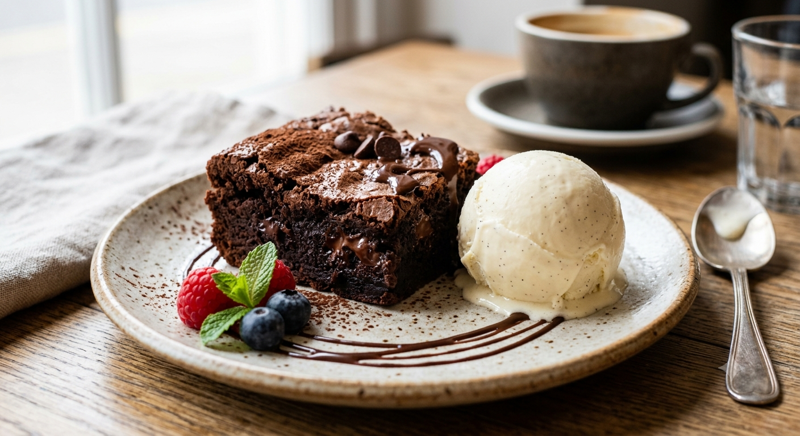
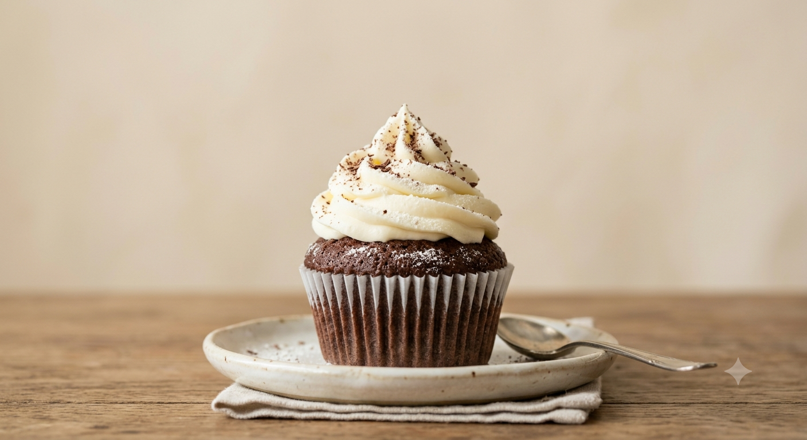

Minha primeira receita
Por: Leticia Cristino
Brownie de Chocolate
Sabe aquele brownie com casquinha levemente crocante por cima e um interior bem úmido, macio e cheio de chocolate? Essa receita é perfeita para matar a vontade de comer um doce caseiro e também para surpreender a família. O melhor de tudo é que é simples de preparar e leva ingredientes fáceis de encontrar!
Ingredientes
200 g de chocolate meio amargo
150 g de manteiga sem sal
3 ovos
xícara de açúcar — 200 g
1/2 xícara de açúcar mascavo — 90 g
1 colher de essência de baunilha
3/4 de xícara de farinha de trigo — 95 g
1/2 xícara de cacau em pó — 45 g
1 pitada de sal
100 g de chocolate picado ou gotas de chocolate
Modo de preparo
Preaqueça o forno a 180 °C. Forre uma forma de aproximadamente 20 × 20 cm com papel-manteiga.
Derreta o chocolate meio amargo junto com a manteiga em banho-maria ou no micro-ondas, mexendo a cada 20–30 segundos.
Em uma tigela, misture os ovos, o açúcar, o açúcar mascavo e a baunilha até obter uma mistura homogênea.
Acrescente o chocolate derretido com a manteiga e misture bem.
Peneire a farinha, o cacau e o sal sobre a mistura. Mexa delicadamente apenas até incorporar os ingredientes.
Adicione o chocolate picado ou as gotas de chocolate e misture rapidamente.
Despeje a massa na forma e espalhe de maneira uniforme.
Leve ao forno por aproximadamente 25 a 30 minutos. O centro deve continuar levemente úmido — não asse demais para manter o brownie cremoso. Retire do forno e deixe esfriar antes de cortar em quadrados.
Dica para servir
Para deixar o brownie ainda mais irresistível, sirva levemente aquecido com uma bola de sorvete de creme.
Rendimento: aproximadamente 12 pedaços
Tempo de preparo: 15 minutos
Tempo de forno: 25–30 minutos

Capcake de chocolate com cobertura de ninho
Sabe aquele cupcake de chocolate bem fofinho, com sabor intenso de chocolate e uma cobertura de Ninho cremosa, leve e irresistível? Essa receita é perfeita para preparar em casa e deixar qualquer café da tarde muito mais gostoso. A massa fica macia e úmida, enquanto a cobertura de leite Ninho dá aquele toque especial que combina perfeitamente com o chocolate.
Além de delicioso, esse cupcake é simples de preparar e leva ingredientes fáceis de encontrar. Você pode fazer para a família, para uma festa de aniversário ou até mesmo para vender!
Ingredientes
2 ovos
1 xícara de açúcar — 200 g
1/2 xícara de óleo — 120 ml
1/2 xícara de chocolate em pó 50% cacau — 50 g
1 xícara de farinha de trigo — 120 g
1/2 xícara de leite — 120 ml
1 colher de chá de essência de baunilha
1 colher de chá de fermento químico em pó
1 pitada de sal
Ingredientes para a cobertura de Ninho
1 lata de leite condensado — 395 g
1 caixinha de creme de leite — 200 g
4 colheres de sopa de leite em pó Ninho
1 colher de sopa de manteiga sem sal
Modo de preparo
Preaqueça o forno a 180 °C e coloque forminhas de papel em uma assadeira própria para cupcakes.
Em uma tigela, misture os ovos, o açúcar e o óleo até obter uma mistura homogênea.
Acrescente o chocolate em pó e misture bem. Em seguida, adicione a farinha de trigo e o leite aos poucos, alternando os dois ingredientes enquanto mistura delicadamente.
Adicione a essência de baunilha e a pitada de sal. Por último, coloque o fermento e misture delicadamente apenas até incorporar.
Distribua a massa nas forminhas, preenchendo aproximadamente 2/3 de cada uma para que os cupcakes tenham espaço para crescer sem transbordar.
Leve ao forno preaquecido por aproximadamente 18 a 25 minutos. Faça o teste do palito no centro de um cupcake; se ele sair limpo ou com algumas migalhas úmidas, está pronto.
Retire do forno e deixe os cupcakes esfriarem completamente antes de colocar a cobertura.
Modo de preparo da cobertura de Ninho
Em uma panela, coloque o leite condensado, o creme de leite, o leite em pó Ninho e a manteiga.
Antes de ligar o fogo, misture bem todos os ingredientes para dissolver o leite em pó e evitar que fiquem gruminhos.
Leve ao fogo baixo, mexendo sem parar, até o creme engrossar e atingir uma consistência cremosa. O ponto ideal é quando a mistura começa a desgrudar do fundo da panela, mas ainda permanece macia.
Transfira a cobertura para um recipiente e cubra com plástico-filme em contato com o creme. Deixe esfriar completamente.
Depois de fria, coloque a cobertura em um saco de confeitar com o bico de sua preferência e decore os cupcakes.
Informações da receita
Rendimento: aproximadamente 12 cupcakes
Tempo de preparo: 20 minutos
Tempo de forno: 18–25 minutos
Tempo total: aproximadamente 45 minutos
